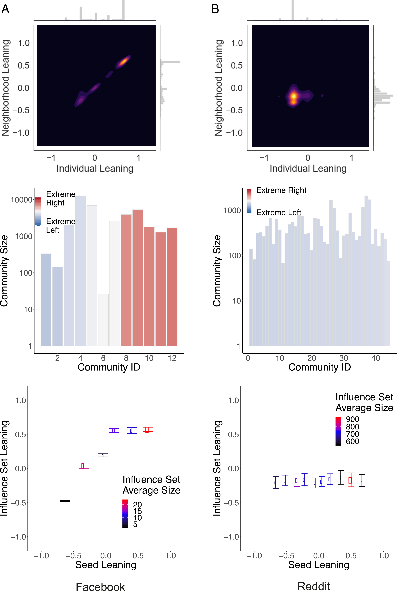

# Data, Analysis, and Model ### Young Joon Oh #### Political Behavior & Methods --- # Slide 1 * Bullet point 1 * Bullet point 2 --- # Slide 2 --- ## Empirical Strategies - <!-- .element: class="fragment" --> Cross-sectional analysis - <!-- .element: class="fragment" -->Panel data - Time series - Network models ---- <!-- 상하 --> ### Logistic Regression (R) ```r model <- glm(vote ~ income + ideology, data = survey, family = binomial()) summary(model) ``` Check --- ## Echo Chambers as Network Structures <!-- 이미지 위치는 md 파일 산하 -->  - High clustering - Low bridging ties - Algorithmic reinforcement --- ## 가운데 정렬 <div style="text-align: center;"> </div> --- # Two Column slide --- ## Panel vs Time Series <div style="display: flex;"> <div style="width: 50%;"> <h3>Panel Data</h3> <ul> <li>Many units</li> <li>Few time points</li> <li>Between-unit variation</li> </ul> </div> <div style="width: 50%;"> <h3>Time Series</h3> <ul> <li>One/few units</li> <li>Long time span</li> <li>Temporal dynamics</li> </ul> </div> </div> --- ## Structural Inversion Hypothesis Network homogeneity is not accidental. Note: 노트 아래 부분은 슬라이드에 안뜸. preview에서 S를 치면 별도의 창이 뜨면서 다 나옴. 이 부분에서 Schich의 diversity 논리와 온라인 정치 네트워크의 차이를 강조 --- ## Think About This If infrastructure access is unequal, can elections alone fix it? - Yes? - No? - Under what conditions? --- ## Data - Patent co-authorship network - 1975–2010 - SAOM (RSiena) --- ## Finding > Diversity precedes resilience > Homogeneity precedes collapse --- ```{python} import numpy as np import matplotlib.pyplot as plt r = np.arange(0, 2, 0.01) theta = 2 * np.pi * r fig, ax = plt.subplots(subplot_kw={"projection": "polar"}) ax.plot(theta, r) ax.set_rticks([0.5, 1, 1.5, 2]) ax.grid(True) plt.show() ```